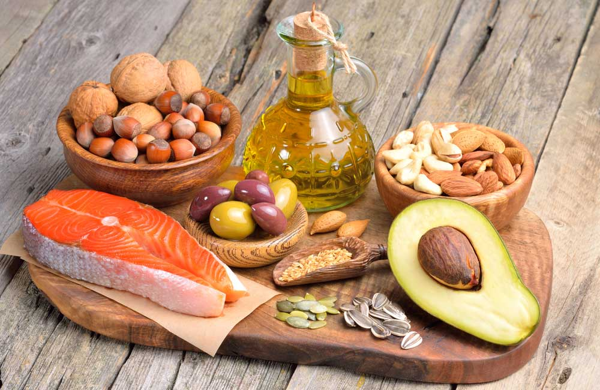
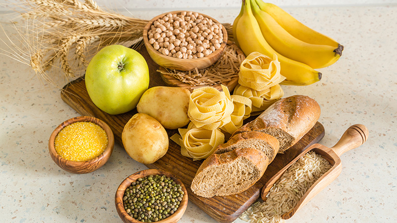

Purpose of Website
Hi and welcome to my website. This website is about food recipes
from breakfast to dinner. Especially for those who are always busy
to cook, these recipes is able to boost your appetite and health.
I have insert recipes from different regions therefore, there will
be choice for everyone. Explore the website and have fun cooking.
Fundamentals of Healthy Diet
While some extreme diets may suggest otherwise, we all need a balance of protein,
fat, carbohydrates, fiber, vitamins, and minerals in our diets to sustain a healthy
body. You don’t need to eliminate certain categories of food from your diet, but rather
select the healthiest options from each category.
Protein
Protein.Gives you the energy to get up and go—and keep going—while also supporting mood
and cognitive function. Too much protein can be harmful to people with kidney disease,
but the latest research suggests that many of us need more high-quality protein, especially
as we age. That doesn’t mean you have to eat more animal products—a variety of plant-based
sources of protein each day can ensure your body gets all the essential protein it needs.
Fat

Fat. Not all fat is the same. While bad fats can wreck your diet and increase your risk of
certain diseases, good fats protect your brain and heart. In fact, healthy fats—such as
omega-3s—are vital to your physical and emotional health. Including more healthy fat in your
diet can help improve your mood, boost your well-being, and even trim your waistline.
Fiber

Fiber.Eating foods high in dietary fiber (grains, fruit, vegetables, nuts,
and beans) can help you stay regular and lower your risk for heart disease, stroke, and
diabetes. It can also improve your skin and even help you to lose weight.
Calcium
Calcium. As well as leading to osteoporosis, not getting enough calcium
in your diet can also contribute to anxiety, depression, and sleep difficulties. Whatever
your age or gender, it’s vital to include calcium-rich foods in your diet, limit those that
deplete calcium, and get enough magnesium and vitamins D and K to help calcium do its job.
Carbohydrates

Carbohydrates.are one of your body’s main sources of energy. But most should
come from complex, unrefined carbs (vegetables, whole grains, fruit) rather than sugars and
refined carbs. Cutting back on white bread, pastries, starches, and sugar can prevent rapid
spikes in blood sugar, fluctuations in mood and energy, and a build-up of fat, especially
around your waistline.
Disclaimer: This website is createdfor education and non-commercial use only. It is an assignment
for completion of unit, FST10011 Fundamentals of Web Technology from Swinburne University of TechnologySarawak Campus.